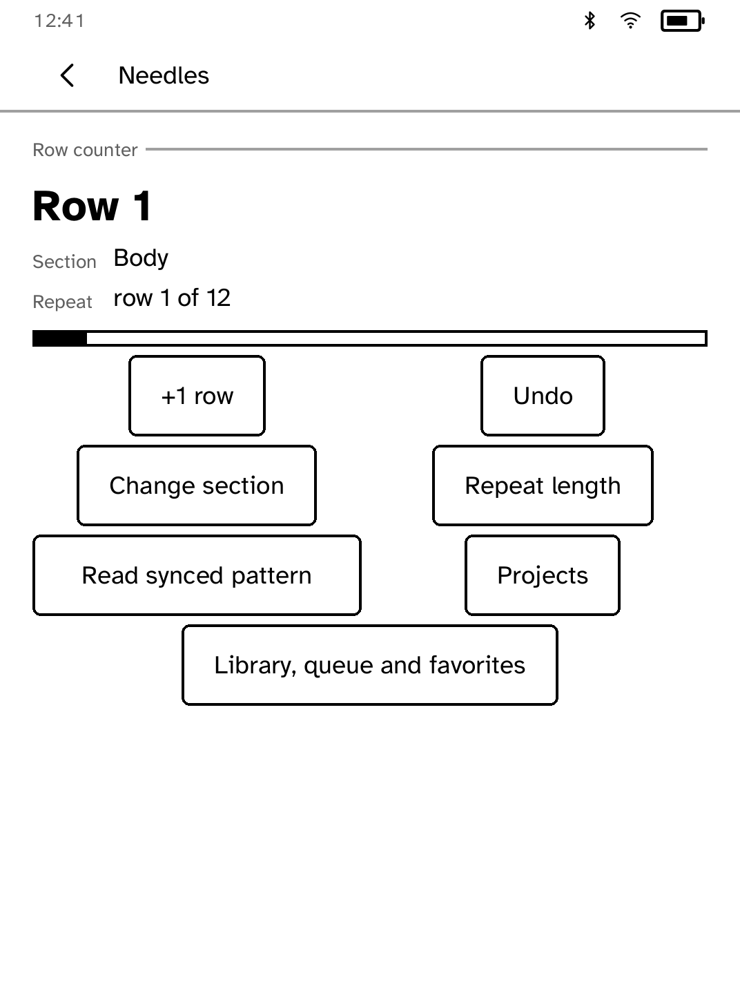

Productivity
Needles
Count rows for each section of a project, browse your Ravelry library, and read patterns you own offline.
- Version
- 0.1.7
- Permissions
- network, keep-awake
- Requires
- Cobalt 0.3.18



New in 0.1.7
Projects and Ravelry collections now turn pages so every saved pattern remains reachable. Sync stays at the foot of the page, repeated taps keep one request, and Back from a pattern restores its collection page.
App setup
Before you install
- Ravelry library sync requires an approved Ravelry API account and HTTP Basic credential.
- Install the credential under the exact name ravelry.
kobo secret set ravelry --device <address> - Prepare and transfer a PDF you own with Poppler's pdftotext installed.
kobo needles push PATTERN.pdf --device <address>
New to Cobalt?
Install Cobalt from your browser
Plug your Kobo into this computer and install Cobalt in about a minute. After that, apps install over Wi-Fi.
Works in Chrome, Edge and Opera. Check your Kobo is supported.
Already have Cobalt?
Link your Kobo to install
On your Kobo, open App Store, tap the globe in the top bar and choose Link browser. Scan the QR code, or enter the pairing code and verification key.
Install on your Kobo
Your Kobo checks the app's signature before installing it.